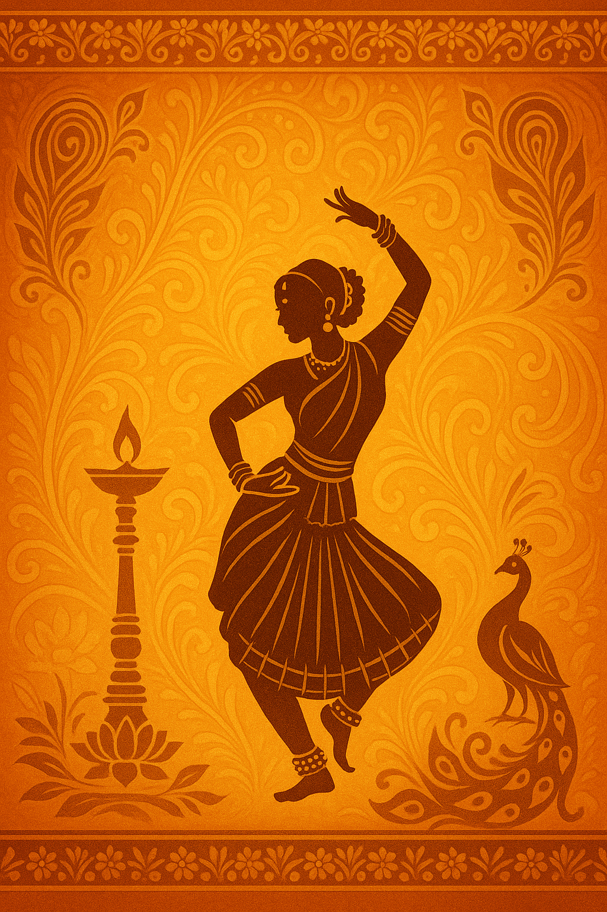
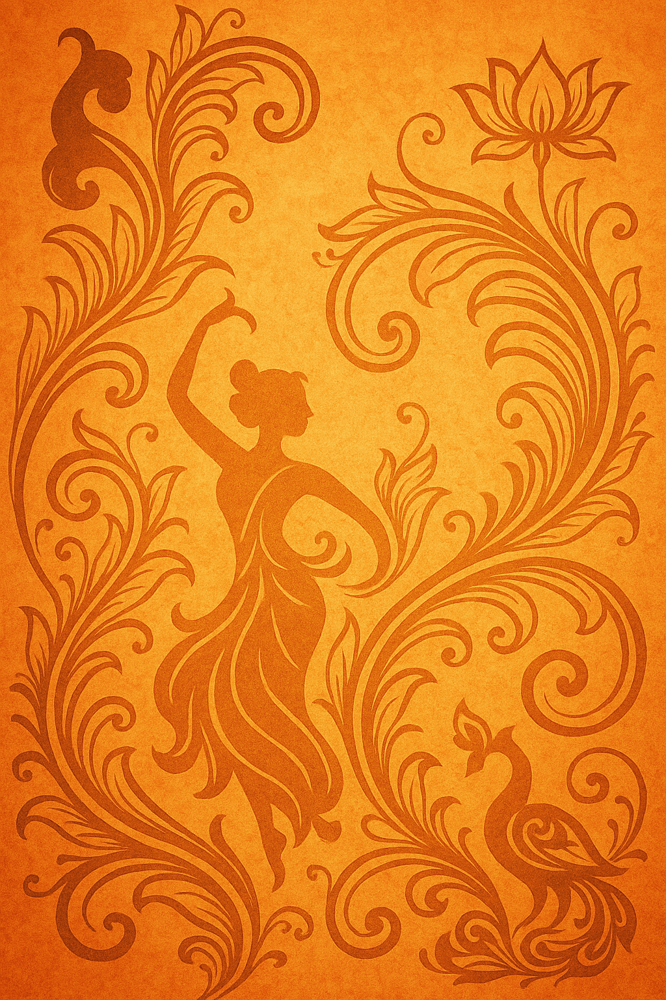

Gallery



Tradition rooted in Kuchipudi, artistry that resonates today.
Born and raised in Kolkata, West Bengal, Priyanka Pahari began exploring dance at the tender age of two. She earned a Junior Diploma in Kathak with distinction from Prachin Kalakendra under Guru Digvijay Bhattacharya and gave solo performances in Kolkata. In addition to Kathak she studied Bharatanatyam under respected gurus such as Aditya Mitra, Ashok Chakravarty, Subrata Pandit and Anita Mallick, performing in productions like Chandalika, Chitrangada and Veer Purush across India【170850075209081†L178-L186】.
Priyanka’s Kuchipudi journey started in 2007 when she trained under Smt. Srimayi Vempati through workshops in Kolkata. In 2010 she moved to Chennai to join the renowned Kuchipudi Art Academy, founded by the late Guru Padma Bhushan Dr. Vempati Chinna Satyam. Immersed in the traditional Gurukulam system, she continued her training under Smt. Srimayi Vempati and received the Diploma title “Natya Visarada” in 2016. The same year she presented her Ranga‑Pravesham at the academy【170850075209081†L164-L165】【911858017176152†L96-L103】.
Alongside her dance practice, Priyanka pursued academic degrees in commerce and psychology, worked as a special educator in Chennai until 2016 and completed diplomas from Sarbobharatiya Sangeet‑O‑Sanskriti Parisad (2007) and “Shilpa Visharad” in fine arts (2009). Now based in Toronto, Canada, she is studying early childhood education and enjoys oil painting, music and travel【170850075209081†L189-L198】.
Today Priyanka balances performance with teaching. She continues advanced training with her guru, refreshes her Kathak practice with Sri Subrata Pandit and runs Pratna Kuchipudi Vrittialaya in Toronto. The school aims to nurture a new generation of artists by integrating dance training with knowledge of Indian history, philosophy, mythology and the arts【526207909054777†L53-L61】.
Performed Chandalika with the Kuchipudi Art Academy at the prestigious Sangeet Natak Akademy in Delhi【911858017176152†L105-L107】.
Participated in Dr. Vempati’s Marghazi Utsav at the Kuchipudi Art Academy in Chennai【911858017176152†L105-L107】.
Featured at the Natya Parampara Utsav in Bangalore, organized by the Kuchipudi Parampara Foundation【911858017176152†L107-L108】.
Solo performer at the Toronto International Dance Festival (TIDF) showcasing Kuchipudi to Canadian audiences【911858017176152†L108-L110】【526207909054777†L63-L65】.
Presented a solo Kuchipudi repertoire for the Delaware Bengali Association in the United States【911858017176152†L108-L110】【526207909054777†L64-L66】.
Performed solo pieces for the Telugu Cultural Association of the Greater Toronto Area【170850075209081†L167-L169】.
Featured artist at Canadian Multiculturalism Day in Ottawa, celebrating diversity through dance【911858017176152†L110-L111】【526207909054777†L67-L68】.
Performed for the Government of Ontario’s Hindu Heritage Month festivities【911858017176152†L111-L112】【526207909054777†L67-L68】.
Invited to perform at the Natyanjali Festival in Calgary, sharing Kuchipudi with Western Canadian audiences【526207909054777†L63-L71】.
Part of the Mehfil‑e‑Kalakaar concert series, she presented Kuchipudi pieces inspired by monsoon poetry【911858017176152†L89-L103】.
Performed the ashtapadi “Sanchara dadara” and the composition “Marakatha manimaya,” noted for her natural expressions and charm【175342072357525†L243-L246】.
Founded by Priyanka in Toronto, Pratna Kuchipudi Vrittialaya translates to “traditional Kuchipudi practice‑abode.” Inspired by the legacy of Padma Bhushan Guru Dr. Vempati Chinna Satyam, the school is dedicated to preserving and advancing the authentic Kuchipudi bani (tradition). Students explore Indian history, philosophy, mythology, temple science, vocal training, Sanskrit, Telugu and the Natyashastra, alongside physical training that includes yoga and methodical practice from fundamentals【526207909054777†L21-L34】. The institute emphasizes the transformative power of knowledge expressed through dance and fosters cultural exchange.
If you’d like to book a performance, organize a workshop or learn Kuchipudi, please get in touch using the form below.